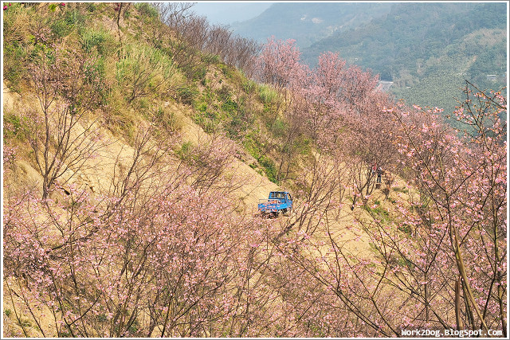
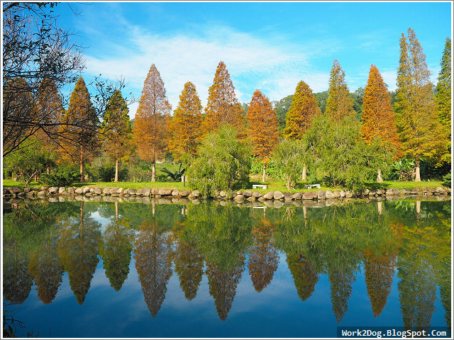
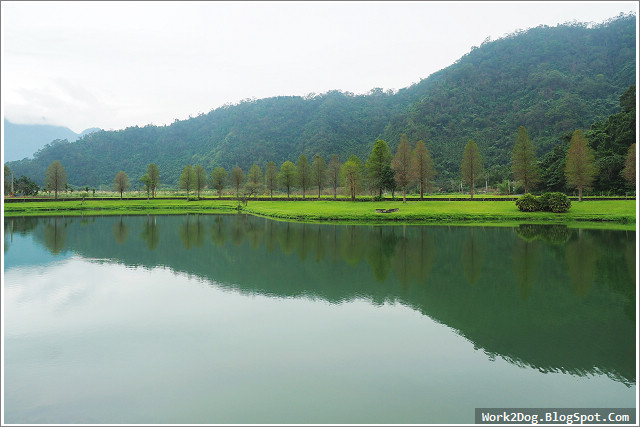
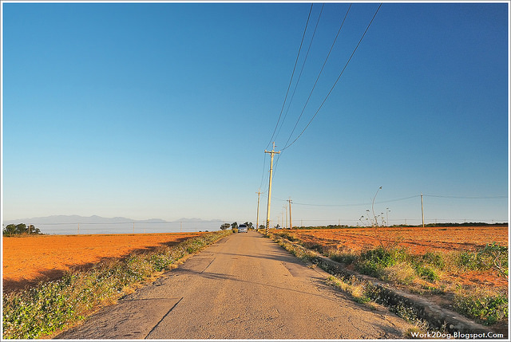
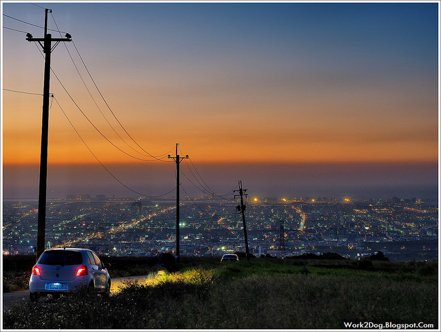
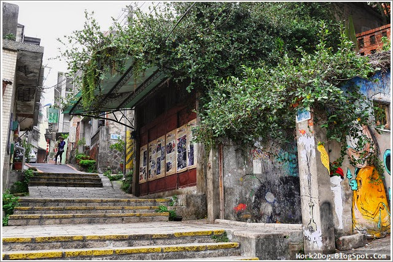

三峽神秘的櫻花谷，就位在通往熊空茶園的竹崙路上，整座山頭遍植數十萬株不同品種的櫻花 ，有八重櫻、吉野櫻、香水櫻等等。地主簡先生是位櫻農，約從20年開始在這裡種植櫻花。 地主種的品種很多，1~3月幾乎都有櫻花可看。
週日一早，地主還得開著藍色小發財車，進來照顧他的櫻苗。此處為私人農地，免費開放給 外人欣賞，大家可要當個有公德心的旅人喔。
每年的秋季就是要追逐落羽松的季節啦！這次介紹的六塘谷，位於新竹北埔大湖村， 地點相當隱密，就連許多當地人都不知有這處景點。六塘谷因為附近有六個灌漑用的池塘 ，因而得名。並且當地居民重新整理後，六塘谷成為一處美麗的公園。真是私房景點啊！ 這麼漂亮的地方，一早遊客不超過五人。六塘谷這排落羽松並不大片，但剛好前面是座池塘； 換上秋裝的落羽松，倒映在湖面上，形成夢幻的湖光景色。
蜊埤湖與一旁的公墓及殯葬管理所比鄰而居，過去鮮少有遊客出沒。近年來，在員山福園 悉心維護之下，自然美景加上秋日的落羽松倒影，逐漸地打破大眾對墓園的既有印象。蜊埤 （ㄆー 二聲）湖，因形狀像蛤蜊而得名，湖畔四周種植了銀杏與落羽松，秋天是蜊埤湖最 美麗的季節。宜蘭落羽松葉變色時間大約落在元旦前後。落羽松在湖面上的倒影，是蜊埤湖 秋日最經典的場景。
從台中大肚山的都會園路，轉進當地人才知道的鄉間小道，追著日光而下，匆忙間留下一段彩霞 ，還在眷戀白天溫暖的味道，那屬於夜的霓虹卻已巧巧上場.....大肚山位於台中大雅與沙鹿的交界 ，地勢高且較少屏障，是看夜景的好去處。「月老夜景」並無明確指標，想去的人可以查詢Google Map ，從沙鹿交流道下來後，往「中75縣道」走，再轉入一條小路裡。隨著坡度向下，整個梧棲與台中港慢慢浮現。
隨著坡度向下，整個梧棲與台中港慢慢浮現。180度視野毫無屏障，另一端是沿伸到清水的高速公路。 拍夜景最重要的就是那幾分鐘的霞光，趕快找個好角度。等待，那最美的時刻降臨。華燈初上，夜愈來愈沉。 夜景雖美，但地處偏僻，注意自身安全。
你知道嗎？其實淡水真正的第一條老街，不是現在被遊客淹沒的中正路，而是位於福佑宮後方， 原名九坎街的重建街。重建街怎麼走？從老街福佑宮旁的小路進去就是了。被列為三級古蹟的淡水福佑宮 ，主要供奉媽祖，過去在淡水唸書時，社團有個傳統，只要是出外的活動，一早會先到福佑宮拜拜 ，求個平安。
本名九坎街是重建街，這裡名人輩出，重建街30號是寫出「咱若打開心內的門窗」的文學家王昶雄故居 ，50號則是淡水最大銀行，淡水一信，前理事麥春福舊居。重建街12號，早期是間國術館。過去的香客中心 ，步上二樓陽台，還可眺望淡水河。重建街31、33、35、37號是九坎仔裡保持昔日街屋風貌最完整的四間房屋 ，長條形狀土埆的牆壁、斗砌的門面，站在前面可讓人依稀回到十九世紀的舊日。說來唏噓，重建街剩下的老建 物其實不多，且大多荒廢。返回石階而下，又再度穿過時間的隧道，站在囂鬧的中正路老街上。
Thanks for the reference from work2dog blogger about taiwan's secrect places.